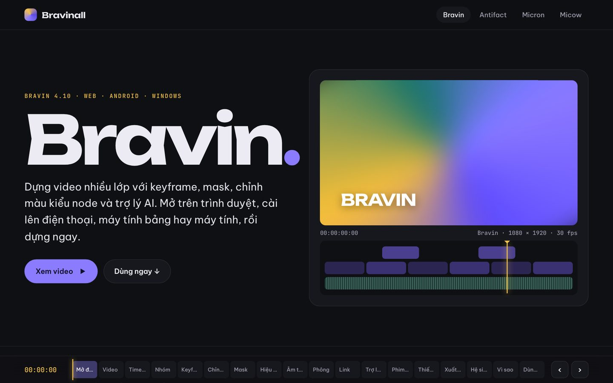
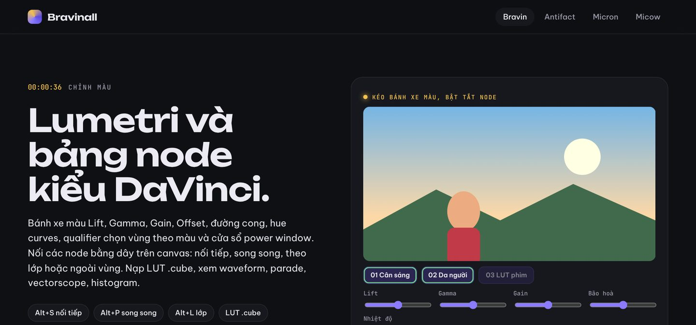
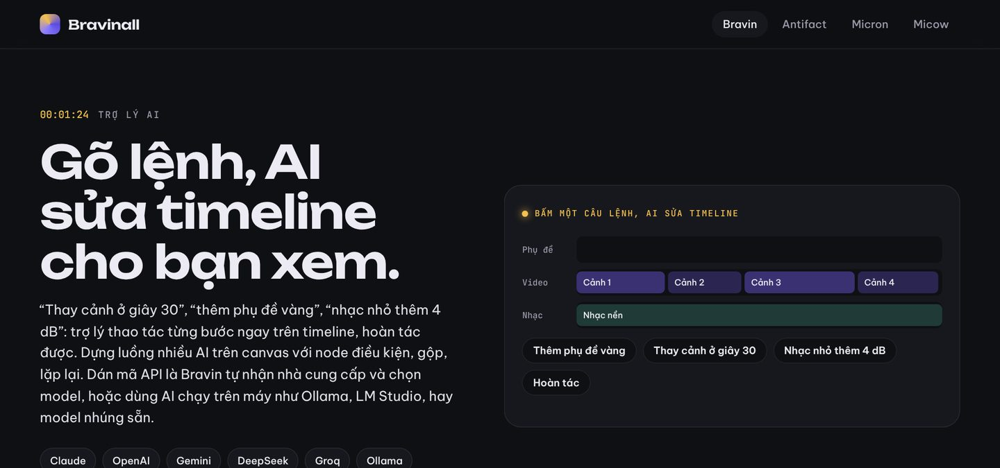
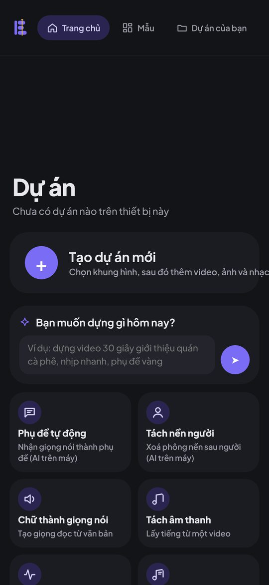

Phạm Việt Hà
Phạm Việt Hà
Mục lục
Bravin là trình dựng video do Phạm Việt Hà xây, ứng dụng đầu tiên của hệ sinh thái Bravinall. Bravin dựng video nhiều lớp với keyframe, mask, chỉnh màu kiểu node và trợ lý AI. Bạn mở trên trình duyệt, cài lên điện thoại, máy tính bảng hay máy tính, rồi dựng ngay.

Cắt ghép như phần mềm chuyên nghiệp
Bravin có timeline nhiều track cho video, video phủ, chữ, sticker, hiệu ứng và âm thanh. Đủ bộ công cụ sửa kiểu Premiere: Ripple, Roll, Slip, Slide. Bạn nhóm clip bằng Ctrl+G và gộp nhiều clip thành compound clip bằng Ctrl+Alt+G.

Keyframe, mask và chỉnh màu
- Keyframe cho mọi thông số: vị trí, cỡ, góc xoay, độ mờ, tốc độ, âm lượng; có speed ramp.
- Mask elip, chữ nhật, gradient, vẽ bằng bút bezier; theo dõi chuyển động để mask bám theo người trong khung.
- Chỉnh màu kiểu DaVinci: bánh xe Lift, Gamma, Gain, bảng node, nạp LUT
.cube, waveform, vectorscope.

Âm thanh và phụ đề
Bravin đo và chuẩn hoá độ to theo LUFS, khử ồn, tự hạ nhạc khi có giọng nói. Phụ đề tạo tự động từ giọng nói, kiểu karaoke sáng theo từng chữ, nhập và xuất SRT.
Trợ lý AI sửa timeline
Gõ "thay cảnh ở giây 30", "thêm phụ đề vàng", "nhạc nhỏ thêm 4 dB", trợ lý thao tác từng bước ngay trên timeline, và bạn hoàn tác được. Bravin dùng AI của bạn: dán mã API là tự nhận nhà cung cấp, hoặc chạy AI ngay trên máy như Ollama, LM Studio.

Phim AI
Khu Phim AI đưa LocalMiniDrama bản tiếng Việt vào Bravin. AI viết kịch bản và thoại tiếng Việt, tách phân cảnh, tạo ảnh và video bằng mô hình bạn chọn, và các cảnh tự vào thư viện Bravin.
Một ứng dụng, mọi thiết bị
| Thiết bị | Điểm đáng chú ý |
|---|---|
| Điện thoại Android | Giao diện gọn cho màn dọc, chạm 2 ngón hoàn tác, chụm để phóng timeline |
| Máy tính bảng, S Pen | Bỏ qua lòng bàn tay, rê bút xem trước khung hình, Samsung DeX |
| Windows | Bộ cài một file, dựng và xuất không cần mạng, phím tắt kiểu Premiere |

Nối với cả hệ sinh thái
Bravin nhận thiết kế từ Antifact (mỗi layer thành một track), chạy plugin từ chợ Micron, và nhận nhạc, lời, mốc nhịp từ Micow.
 Mở BravinDùng ngay trên trình duyệt, không cần tài khoản
Mở BravinDùng ngay trên trình duyệt, không cần tài khoản